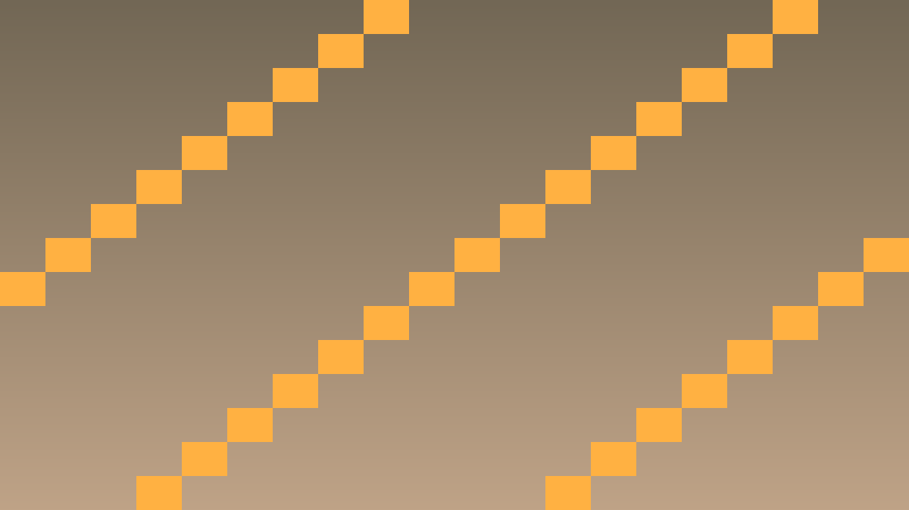
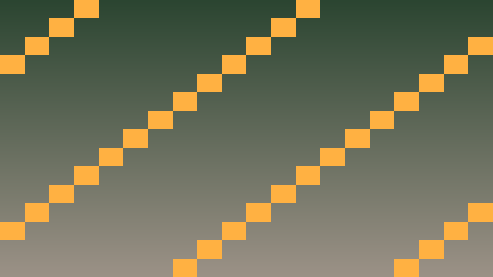

6.2 Animation (animācijas) un Tween (pakāpeniska vērtību maiņa)
Stundas uzdevums: Pievienot animation (animācijas) UI (lietotāja saskarne) un spēles object (objektiem) ar AnimationPlayer (animāciju atskaņotājs) un Tween (pakāpeniska vērtību maiņa).
80 min plāns: Teorija un paraugs (~10 min) · 1. uzdevums (~20 min) - uztaisi pirmo Tween (pakāpeniska vērtību maiņa) animation (animāciju) · 2. uzdevums (~25 min) - animē menu (izvēlnes) parādīšanos · 3. uzdevums (~20 min) - pievieno atsauksmes animation (animāciju) spēlē · Iesniegšana (~5 min).
Pirms sāc: atver savu menu (izvēlni) no 6.1 stundas. Animation (animācija) nav tikai skaistums - tā pasaka spēlētājam, ka viņa darbība tika pamanīta.
Teorija: Animation (animācijas) Godot
Godot piedāvā divas pieejas animation (animācijām):
- AnimationPlayer (animāciju atskaņotājs) - vizuāli (timeline editor (laika skalas redaktors)) izveidotas animation (animācijas).
- Tween (pakāpeniska vērtību maiņa) - programmatiski izveidotas vienkāršas animation (animācijas).
// Tween - fade in
private void ShowButton()
{
Tween tween = CreateTween();
button.Modulate = new Color(1, 1, 1, 0); // sākotnēji caurspīdīgs
tween.TweenProperty(button, "modulate", new Color(1, 1, 1, 1), 0.5);
}
// Tween - kustība ar bounce
private void ShakeButton()
{
Tween tween = CreateTween();
Vector2 original = button.Position;
tween.TweenProperty(button, "position", original + new Vector2(10, 0), 0.05);
tween.TweenProperty(button, "position", original - new Vector2(10, 0), 0.05);
tween.TweenProperty(button, "position", original, 0.05);
}Kā šo izmantot project (projektā)
Atceries: ar redzamu efektu editor (redaktorā) nepietiek. Paskaidro, kura C# class (klase) glabā state (stāvokli), kura method (metode) to maina un kā Godot node (mezgls) structure (struktūra) izmanto šo code (kodu).
Pārbaudi: UI (lietotāja saskarne) signal (signāli), audio (skaņa) darbības, debug (atkļūdošana) output (izvade) un publishing (publicēšanas) template (sagatave) ir sasaistīta ar C# game state (spēles stāvokli).
public class PolishCheckpoint
{
public string Lesson = "6.2 Animācijas un Tween";
public bool UsesCSharp = true;
public bool ConnectsUiSignals = true;
public bool RoutesAudioEvents = true;
public bool VerifiesExportBuild = true;
}Praktiskie uzdevumi
1. uzdevums -
Uztaisi pirmo Tween (pakāpeniska vērtību maiņa) animation (animāciju)
Beigās object (objekts) vienmērīgi pārvietosies no vienas vietas uz otru.
- Pārliecinies, ka file (faila) sākumā ir
using Godot;. - Izveido code (kodā)
Tween tween = CreateTween();. - Pievieno
tween.TweenProperty(objekts, "position", new Vector2(600, 300), 1.0);. - Būvē un palaid - object (objektam) vienmērīgi jāaizslīd.
- Nomaini ilgumu uz 0.2 un palaid vēlreiz.
- Pievieno
.SetTrans(Tween.TransitionType.Elastic);. - Pieraksti, kā mainījās kustības raksturs.
Gatavs, kad: object (objekts) pārvietojas vienmērīgi, un ar TransitionType.Elastic tas mērķī nedaudz atlec.
2. uzdevums -
Animē menu (izvēlnes) parādīšanos
Beigās menu (izvēlne) parādīsies mīksti, nevis uzreiz.
- Iestati menu (izvēlnei) sākumā
Modulate = new Color(1, 1, 1, 0);. - Izveido
_Readymethod (metodē) Tween (pakāpeniska vērtību maiņa). - Animē property (īpašību)
modulate:ano 0 uz 1 vienā sekundē. - Palaid un vēro, kā menu (izvēlne) parādās.
- Pievieno arī nelielu nobīdi no augšas uz vietu.
- Savieno abas animation (animācijas) ar
tween.SetParallel(true);. - Pieraksti, ar ko paralēla animation (animācija) atšķiras no secīgas.
Gatavs, kad: menu (izvēlne) vienlaikus izgaismojas un noslīd vietā, nevis dara to pa vienam.
3. uzdevums -
Pievieno atsauksmes animation (animāciju) spēlē
Beigās spēlētājs redzēs, ka viņa darbība tika pamanīta.
- Izvēlies vienu event (notikumu) savā spēlē, piemēram monētas savākšanu.
- Pievieno tam Tween (pakāpeniska vērtību maiņa), kas object (objektu) uz brīdi palielina un tad atgriež.
- Pievieno arī krāsas mirgojumu, kad spēlētājs saņem triecienu.
- Pārliecinies, ka animation (animācija) netraucē spēles gaitu.
- Pārbaudi, kas notiek, ja event (notikums) atkārtojas ļoti ātri.
- Apturi iepriekšējo Tween (pakāpeniska vērtību maiņa) ar
Kill(), ja tas vēl darbojas. - Pieraksti, kāpēc animation (animācija) palīdz saprast spēli.
Gatavs, kad: savācot monētu, tā uz mirkli palielinās, un ātri atkārtojot event (notikumu), animation (animācijas) nesajūk.
Papildu uzdevums - Izmēģini AnimationPlayer (animāciju atskaņotājs)
Ja pamatdarbs ir gatavs, salīdzini otru pieeju.
- Pievieno scene (scēnai)
AnimationPlayer(animāciju atskaņotājs) node (mezglu). - Izveido tajā animation (animāciju) ar diviem atslēgkadriem.
- Palaid to no code (koda) ar
animationPlayer.Play("nosaukums");. - Pieraksti, kura pieeja bija ātrāk izveidojama.
- Pieraksti, kurā gadījumā labāk lietot katru no tām.
Gatavs, kad: abas pieejas dod animation (animāciju), un tu vari nosaukt, kad kura ir ērtāka.
Ko sagatavo
Stundas mērķis: Tavā spēlē darbojas Tween (pakāpeniska vērtību maiņa) animation (animācijas): menu (izvēlne) parādās mīksti, un vismaz viens spēles event (notikums) dod spēlētājam vizuālu atsauksmi, kas nesajūk pie ātras atkārtošanas.
GitHub repository (krātuvē) jābūt:
- README.md ievietota video link (saite), kurā redzama menu (izvēlnes) spawn (parādīšanās) un spēles event (notikuma) animation (animācija).
- C# file (fails) ar
CreateTweenunTweenPropertyizsaukumiem. - README.md: ar ko paralēla animation (animācija) atšķiras no secīgas un kāpēc vajag
Kill().
Kā iesniedz: Veic commit (izmaiņu fiksējums) un push (nosūtīšana uz attālo krātuvi). Skolotāja norādītajā vietā ievieto tikai GitHub repository (krātuves) link (saiti); visiem prasītajiem file (failiem), README.md pierakstiem un pierādījumiem jābūt pašā repository (krātuvē).
Biežākās kļūdas
- Tween (pakāpeniska vērtību maiņa) nedarbojas:
CreateTween()izveido Tween (pakāpeniska vērtību maiņa) object (objektu); ja vēlāk tas jāaptur, saglabā to field (laukā). - AnimationPlayer (animāciju atskaņotājs) skip frames (kadrs): Animation length (animācijas ilgums) pārāk īss vai
Play()izsaukts vairākkārt. - Particles invisible: CollisionShape2D (2D sadursmes forma) vai Sprite2D (2D attēla mezgls) parent var ietekmēt visibility (redzamība).
Godot screenshot (ekrānuzņēmumi)


Code sample (koda piemērs) (paplašināts)
using Godot;
public partial class Player : CharacterBody2D
{
public void OnTakeDamage(int amount)
{
// Damage number popup
Label damageLabel = new Label();
damageLabel.Text = "-" + amount;
damageLabel.Position = Position + new Vector2(0, -30);
damageLabel.AddThemeColorOverride("font_color", new Color(1, 0, 0));
GetParent().AddChild(damageLabel);
// Tween: peld augšup un izgaist
Tween tween = damageLabel.CreateTween();
tween.SetParallel(true); // abas animācijas paralēli
tween.TweenProperty(damageLabel, "position", damageLabel.Position + new Vector2(0, -50), 0.8);
tween.TweenProperty(damageLabel, "modulate:a", 0.0, 0.8);
tween.Chain().TweenCallback(Callable.From(damageLabel.QueueFree));
// Player flash red
Tween flash = CreateTween();
Modulate = new Color(1, 0, 0);
flash.TweenProperty(this, "modulate", new Color(1, 1, 1), 0.3);
}
}